Cleveland Travel Guide
Dynamic metropolis renowned for manufacturing heritage, performing arts institutions, healthcare innovation, and revitalized waterfront districts.
Places to See in Cleveland

Jonathunder, CC BY-SA 3.0, via Wikimedia Commons; Image Size Adjusted

African American Museum in Cleveland
From Cleveland, OH: Drive east toward University Circle, taking local city streets to Crawford Road and following signs to the museum, which is located a short distance from downtown.
Des Moines Guy, CC BY-SA 3.0, via Wikimedia Commons; Image Size Adjusted

Arcade
Historic Victorian-era shopping arcade featuring ornate architecture, boutique shops, dining, and a grand glass skylight atrium.
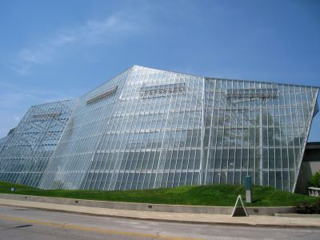
Danksergeant15, CC BY-SA 4.0, via Wikimedia Commons; Image Size Adjusted

Cleveland Botanical Garden
Indoor and outdoor gardens featuring diverse plant collections, immersive glasshouse biomes, and seasonal exhibits designed to inspire and educate visitors of all ages.
Jonathunder, CC BY-SA 3.0, via Wikimedia Commons; Image Size Adjusted
Cleveland History Center
Museum featuring immersive exhibits, historic vehicles, and cultural artifacts that chronicle the evolution of a major American city.
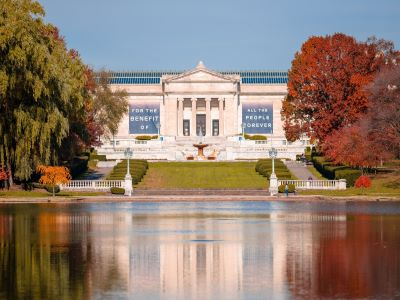
Danksergeant15, CC BY-SA 4.0, via Wikimedia Commons; Image Size Adjusted
Cleveland Museum of Art
World-renowned institution offering free access to a vast collection of global art spanning thousands of years, with interactive exhibits and rotating special exhibitions.
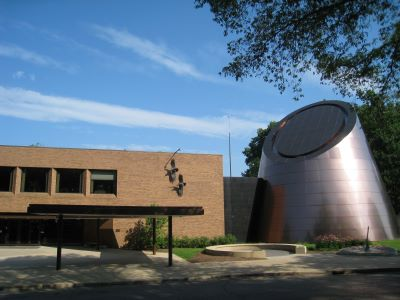
Dsmspence, CC BY-SA 3.0, via Wikimedia Commons; Image Size Adjusted

Cleveland Museum of Natural History
Interactive science and nature museum featuring immersive exhibits, a planetarium, and live animal habitats that explore Earth's history and biodiversity.
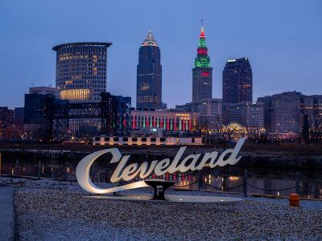
Dsmspence, CC BY-SA 3.0, via Wikimedia Commons; Image Size Adjusted
Cleveland Script Sign The Foundry
Iconic photo spot featuring a bold city sign set against a riverside skyline backdrop, popular for capturing Cleveland’s urban charm.
Dsmspence, CC BY-SA 3.0, via Wikimedia Commons; Image Size Adjusted
Cleveland Trust Company Building
Architecturally significant Beaux-Arts landmark featuring a soaring glass-domed rotunda, historic murals, and one of the most impressive banking interiors in the United States.
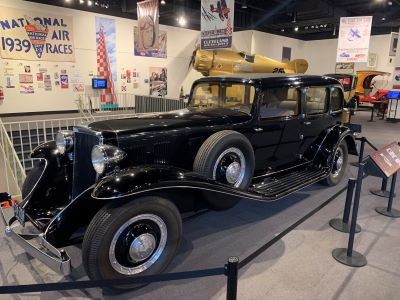
Dsmspence, CC BY-SA 3.0, via Wikimedia Commons; Image Size Adjusted
Crawford Auto & Aviation Museum
Extensive collection of vintage automobiles, aircraft, and transportation artifacts that trace the evolution of mobility and innovation in American history.
Dsmspence, CC BY-SA 3.0, via Wikimedia Commons; Image Size Adjusted
Great Lakes Science Center
Interactive science museum featuring hands-on exhibits, space exploration displays, engineering experiences, and immersive educational attractions that inspire curiosity about science and technology.
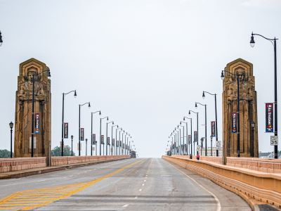
Dsmspence, CC BY-SA 3.0, via Wikimedia Commons; Image Size Adjusted
Hope Memorial Bridge
Iconic Art Deco truss bridge distinguished by monumental stone sculptures that symbolize the evolution of transportation and industrial progress.
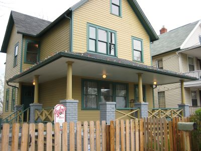
Dsmspence, CC BY-SA 3.0, via Wikimedia Commons; Image Size Adjusted
House from A Christmas Story
Restored movie home and museum offering guided tours, memorabilia, and nostalgic experiences from the beloved holiday classic.
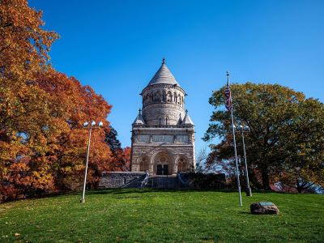
Dsmspence, CC BY-SA 3.0, via Wikimedia Commons; Image Size Adjusted
James A. Garfield Monument
Architecturally striking memorial and final resting place of the 20th U.S. President, featuring stained glass, marble reliefs, and panoramic cemetery views.
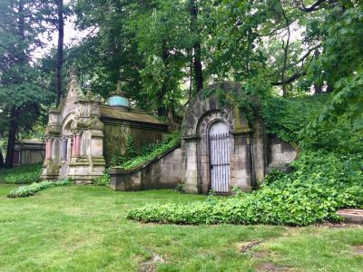
Dsmspence, CC BY-SA 3.0, via Wikimedia Commons; Image Size Adjusted
Lake View Cemetery
Historic garden cemetery offering scenic walking paths, notable monuments, and the final resting places of prominent figures in American history.
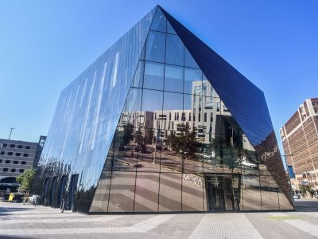
Dsmspence, CC BY-SA 3.0, via Wikimedia Commons; Image Size Adjusted
Museum of Contemporary Art Cleveland
Cutting-edge cultural institution showcasing contemporary art through rotating exhibitions, public programs, and community engagement in a striking modern building.
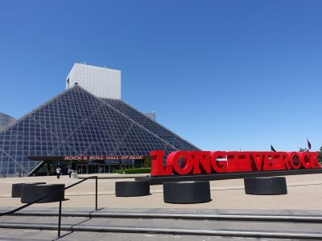
Dsmspence, CC BY-SA 3.0, via Wikimedia Commons; Image Size Adjusted
Rock and Roll Hall of Fame
Iconic museum celebrating the history and impact of rock music through immersive exhibits, legendary artifacts, and dynamic live events.
Dsmspence, CC BY-SA 3.0, via Wikimedia Commons; Image Size Adjusted
Severance Music Center
World-renowned concert hall featuring exceptional acoustics, elegant architecture, and performances by one of America's most celebrated symphony orchestras.
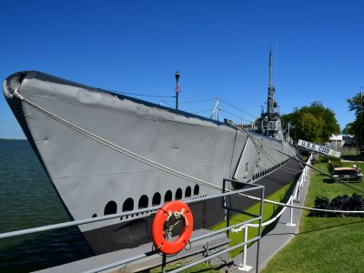
Dsmspence, CC BY-SA 3.0, via Wikimedia Commons; Image Size Adjusted
USS Cod Submarine Memorial
National Historic Landmark submarine offering onboard tours, wartime exhibits, and a firsthand look at life aboard a WWII naval vessel.
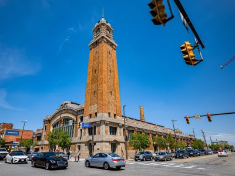
Dsmspence, CC BY-SA 3.0, via Wikimedia Commons; Image Size Adjusted
West Side Market
Historic public market offering a vibrant mix of local produce, meats, baked goods, and international foods in a landmark 1912 building.
Dsmspence, CC BY-SA 3.0, via Wikimedia Commons; Image Size Adjusted
Western Reserve Historical Society
Regional history organization preserving and presenting the heritage of Northeast Ohio through museums, archives, and educational programs.
Overview
Cleveland, Ohio, sits on the southern shore of Lake Erie at the mouth of the Cuyahoga River and is the largest city in northeast Ohio. It is famous as the home of the Rock and Roll Hall of Fame, for the Cleveland Orchestra, for one of the best art museums in the country, and for its passionate sports fans. Once a steel and shipping powerhouse and the headquarters of Standard Oil, the city is now a center for healthcare, research, and the arts, with the Cleveland Clinic among the best-known hospitals in the world.
Visitors come to Cleveland for its rock and roll history, its museums, many of which are free or inexpensive, its food scene centered on the West Side Market and the neighborhoods of Ohio City and Tremont, and its lakefront and Metroparks. It is also a popular destination for sports fans and for fans of the movie A Christmas Story. The city offers big-city culture at a fraction of the cost of the coastal cities, and it has a reputation for friendly people and a comeback story that many find appealing.
History
Cleveland was founded in 1796 by Moses Cleaveland of the Connecticut Land Company, who surveyed a town at the mouth of the Cuyahoga River, and it was a small village until the Ohio and Erie Canal opened in 1832 and connected Lake Erie to the Ohio River. The arrival of the railroads, the shipping of iron ore from the upper Great Lakes, and the rise of steel, oil refining, and manufacturing made it one of the largest cities in the country by the early twentieth century, with a wealthy "Millionaires' Row" on Euclid Avenue. The decline of heavy industry in the later twentieth century brought population loss and well-known problems, including the 1969 Cuyahoga River fire that helped inspire the environmental movement, but the city has revived its downtown, lakefront, and neighborhoods in recent decades. The Cleveland History Center tells much of this story.
Sightseeing and Popular Landmarks
The Rock and Roll Hall of Fame, designed by I. M. Pei, anchors the lakefront next to the Great Lakes Science Center and the USS Cod Submarine Memorial. The West Side Market has been operating since 1912 under a landmark Byzantine-style clock tower, and the Arcade is a Victorian-era shopping arcade with a glass roof. Other sights include the Cleveland Trust Company Building, the Hope Memorial Bridge and its Guardians of Traffic, the Cleveland Script sign, and the house from A Christmas Story. Lake View Cemetery contains the James A. Garfield Monument as well as the grave of John D. Rockefeller.
Culture and Museums
The Cleveland Museum of Art has one of the finest collections in the country, with free general admission, and it sits in University Circle with the Cleveland Museum of Natural History, the Museum of Contemporary Art Cleveland, the Cleveland Botanical Garden, and the Severance Music Center, the home of the Cleveland Orchestra. Other museums include the African American Museum in Cleveland, the Crawford Auto-Aviation Museum, and the history center. Playhouse Square, the second-largest performing arts center in the country after Lincoln Center, hosts Broadway tours, opera, and ballet in restored historic theaters.
Parks
Cleveland is surrounded by the "Emerald Necklace" of Cleveland Metroparks, a ring of parks that includes the Cleveland Metroparks Zoo, Rocky River Reservation, and the Brecksville Reservation. The Cuyahoga Valley National Park lies between Cleveland and Akron, with waterfalls, trails, the Towpath Trail, and the Cuyahoga Valley Scenic Railroad. Along the lake, Edgewater Park has a beach and good skyline views, and the Cleveland Botanical Garden and Wade Oval are in University Circle, while the Lakefront Nature Preserve and Lake Erie Islands are good for birding and boating.
Sports
Cleveland is a major professional sports city, with three major league teams playing downtown. The Cleveland Browns of the NFL play at Huntington Bank Field on the lakefront, the Cleveland Guardians of Major League Baseball play at Progressive Field, and the Cleveland Cavaliers of the NBA play at Rocket Arena. The Cavaliers won the 2016 NBA championship, and the Guardians (known as the Indians until 2021) have won two World Series, in 1920 and 1948.
Seasons and Weather
Cleveland has a humid continental climate that is strongly influenced by Lake Erie. Summers are warm and humid, with highs in the 80s°F, and the lake provides cooler breezes along the shore, while winters are cold and cloudy with highs in the 30s°F. Lake-effect snow is common in the winter, especially in the eastern suburbs, and Cleveland averages more than 60 inches of snow annually. Late spring and early fall are the best times to visit, and summer is the most popular season for festivals and outdoor activities.
This article uses material from Wikipedia as well as information from official tourism and institutional sources. Key references include Destination Cleveland, Rock & Roll Hall of Fame, Cleveland Museum of Art, The Cleveland Orchestra, Cleveland Metroparks, Cuyahoga Valley National Park, Cleveland Browns, Cleveland Guardians, Cleveland Cavaliers, and the National Weather Service Cleveland. Wikipedia material is from the articles "Cleveland" and "History of Cleveland", and is available under the Creative Commons Attribution-Share-Alike License 3.0.
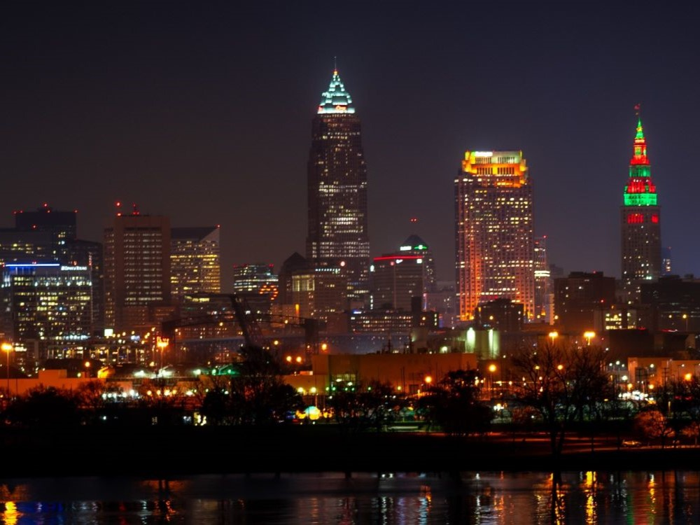
.jpg){kind=link}
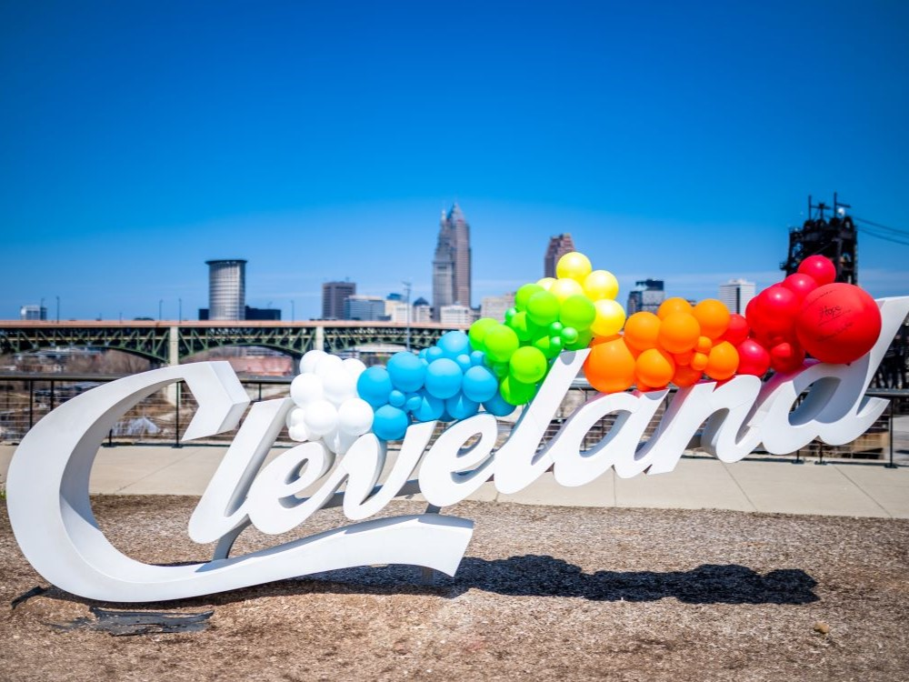

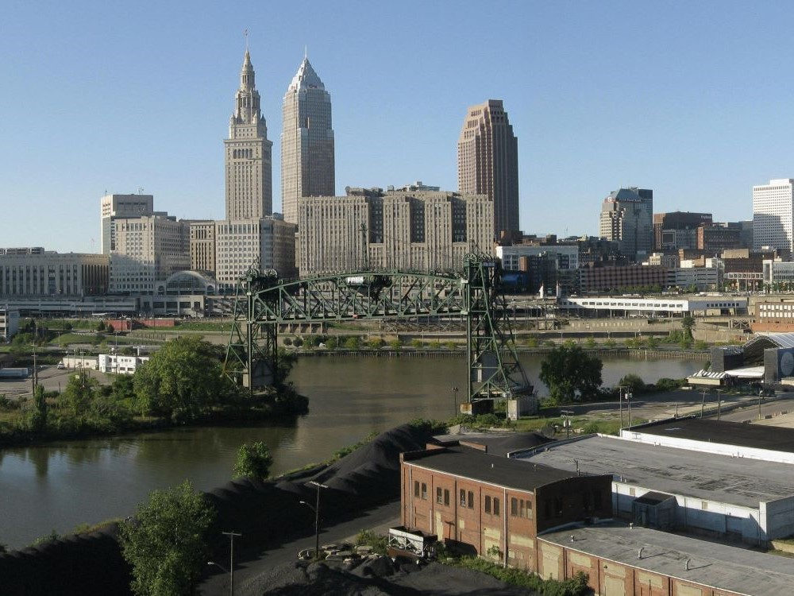